IF14.3| scRNA-seq+脂质组多组学分析揭示宫内生长受限导致肝损伤的性别差异
原文：https://mp.weixin.qq.com/s?__biz=MzAwMzIzOTk5OQ==&mid=2247520900&idx=1&sn=157134292ffc2e5df730c5ba8a357b61&chksm=9b3cebd4ac4b62c286543c30381e9b4fdb8b44b28d4fa902fb963bbd45b28e1d3f1bc98eb148#rd 合集：单细胞教程全收录 / 文献速递
写在前面
DOI: 10.1002/advs.202403095
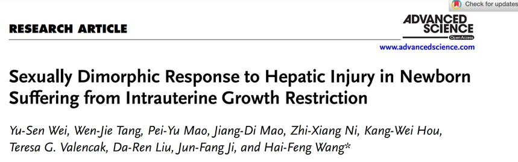
今天分享的文献发表在《advanced science》上，影响因子为14.3 ，题目是**“Sexually Dimorphic Response to Hepatic Injury in Newborn Suffering from Intrauterine Growth Restriction”** 。宫内生长受限（IUGR） ，顾名思义就是胎儿大小异常，在宫内未达到预期生长潜能，通常情况下胎儿出生体重低于同龄正常体重的10%。当发生IUGR时，肝功能异常及成年后患慢性肝病风险均提高， 能否利用早期胎儿发育的可塑性来改善胎儿发育不良仍是未开发的领域，所以作者在这篇文章中利用多组学联合分析进行了具体的研究。根据新生儿的生长特征和实验室以往的研究发现，作者使用新生仔猪作为IUGR的模型，发现其导致的肝损伤存在性别差异，雌性猪能更好地适应缺氧应激，而雄性猪则受损更严重， 除此之外，作者还发现载脂蛋白A4 (APOA4)能够减少肝脏甘油三酯沉积而改善雄性猪的缺氧反应，PPAR𝜶的激活能够帮助过表达的APOA4恢复到正常水平和减轻肝损害。感兴趣的话我们来一起看看具体内容吧。值得一提的是，本篇文章的数据被整理发布在shinyApp 之中：http://biomamba.com :34038/IUGR.wys.shiny/(是的你没看错，挂在我的域名下啦)
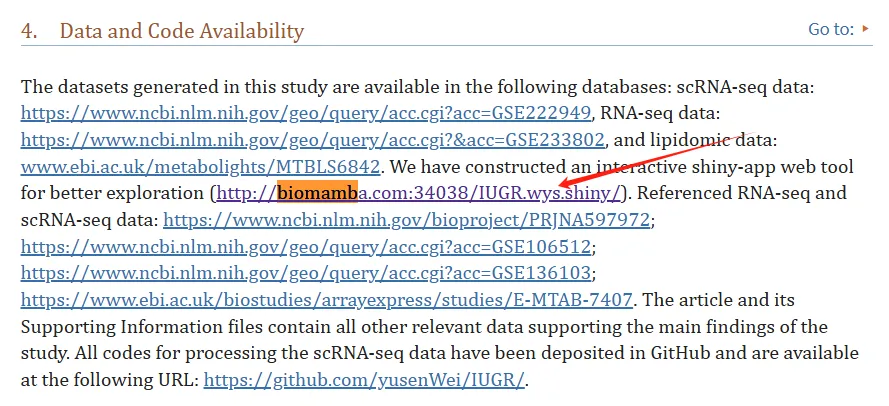
感兴趣的同学可以去网站里查看数据：
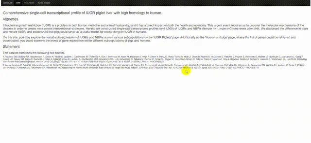
如果大家需要数据库搭建、分析指导 、生信热点全文复现 、自测数据个性化分析 辅导，欢迎联系客服微信[Biomamba_kefu]
主要内容
- **1. **生化特征及肝RNA-seq数据的再分析确定了IUGR雄性个体的肝损伤
首先对于新生儿生化特征的分析显示，相比于雄性个体，雌性个体中总蛋白（TP） 和白蛋白（ALB） 水平升高，而肝损害指标谷丙转氨酶（ALT）和谷草转氨酶 (AST)比值 降低；将出生时体重小于2500g认为是LBW组，结果发现相比于对照组，两种性别中TP和ALB均降低，但仅在雄性中，存在肝脏碱性磷酸酶(ALP)和ALT/AST的升高，球蛋白(GLOB)和胆碱酯酶(CHE)的降低，提示雄性个体存在明显的肝损伤（Fig.1a）；其次作者发现新生婴儿及仔猪血清参数相近（Fig.1b）。与正常NBW组相比，IUGR猪表现出明显的生长能力缺失（Fig.1c），生长相关因子IGF-1减少（Fig.1d）和器官中肝脏指标上升（Fig.1f）;但令人惊讶的是两种性别中甘油三酯的表达却存在差异（Fig.1e）。RNA-seq数据的再分析发现IUGR雄性个体的转录紊乱程度较大，有1074个差异表达基因，而雌性只有192个。**以上结果提示：**IUGR雄性个体更容易发生肝损伤 。
Fig.1****
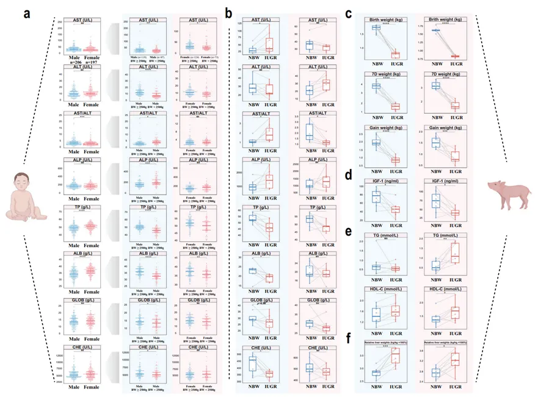
2. 仔猪和人的肝脏单细胞转录谱展现出高度同源性
作者接下来选取了正常仔猪和IUGR仔猪的肝脏组织，每组公仔猪(n = 3)和母仔猪(n = 1)共8只进行了单细胞转录组学分析，分析结果共鉴定了22个细胞亚群（Fig.2a），并使用细胞标志物进行了验证（Fig.2b）；接下来作者整合了GSE136103 和E-MTAB-7407 中人类的肝脏测序数据，和仔猪的分析结果进行比较发现人类和猪细胞基因表达模式显著重叠（Fig.2c），调控细胞分化的转录因子一致（Fig.2d-e）；且细胞周期分布相近（Fig.2f）,因此猪肝可以作为研究人类肝脏疾病的有效模型。 进一步通过UMAP分析IUGR对于雌性和雄性个体不同细胞类型的影响，结果显示IUGR雌性和雄性的红系细胞均显著增加，提示两者均发育迟缓，但在雌性个体中NK/NKT细胞、T细胞、单核细胞和Kupffer细胞的比例发生了改变，差异表达基因与免疫反应及炎症相关，而雄性个体中Kupffer细胞和NK/NKT细胞数量增加，差异表达基因与血管发育受损和巨噬细胞相关，说明了IUGR导致雄性和雌性表现出不同的细胞转录水平。
Fig.2****
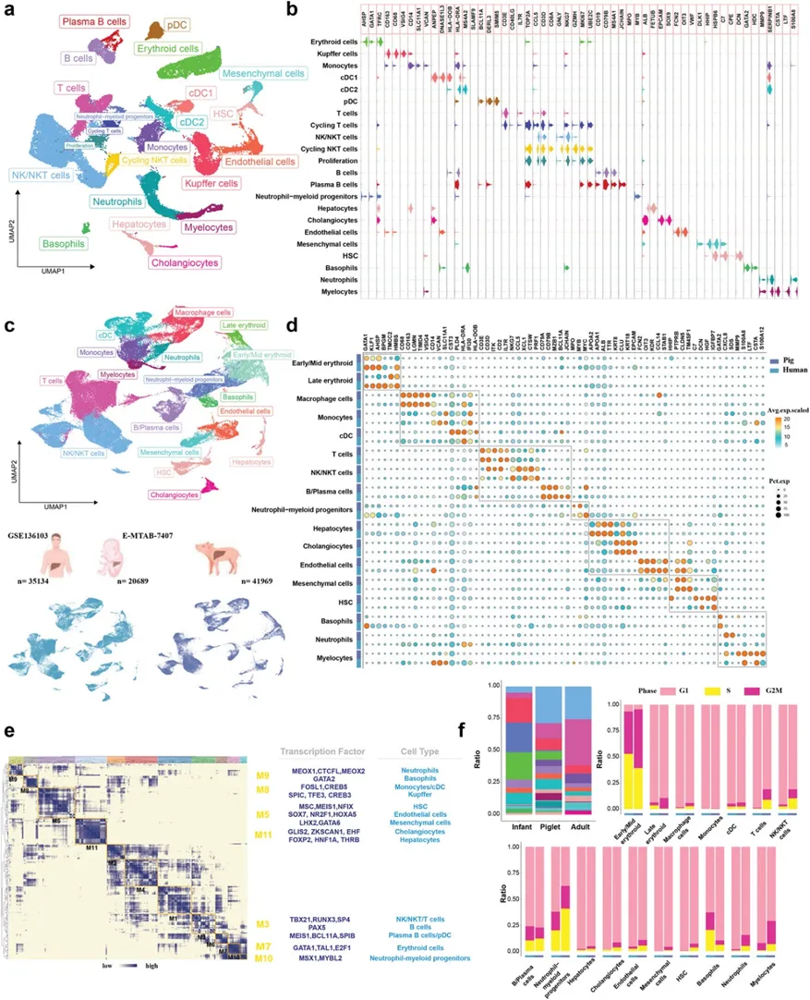
3. 雌性个体诱导免疫反应应答来减缓肝损伤
接下来作者经过Cellchat分析发现雌性个体中淋巴细胞，内皮细胞和成纤维细胞存在明显的相互作用（Fig.3a），且PTN-NCL和CXCL2-CXCR4等受体-配体相互作用明显增强（Fig.3b）。提示成纤维细胞的活化能够导致淋巴细胞的分化。 且作者发现IUGR雌性个体中肝细胞生长因子HGF（Fig.3d）和血清中E2（Fig.3e）含量升高。Monocle轨迹分析揭示T细胞逐步发育成Treg细胞，表明肝脏组织向免疫耐受表型过渡以减轻肝脏炎症（Fig.3f）。ELISA实验进一步验证了IUGR雌性个体中IL-10和TGF-β等抑炎因子水平升高（Fig.3h），IF染色显示Treg细胞数量增加（Fig.3i）。
Fig.3****
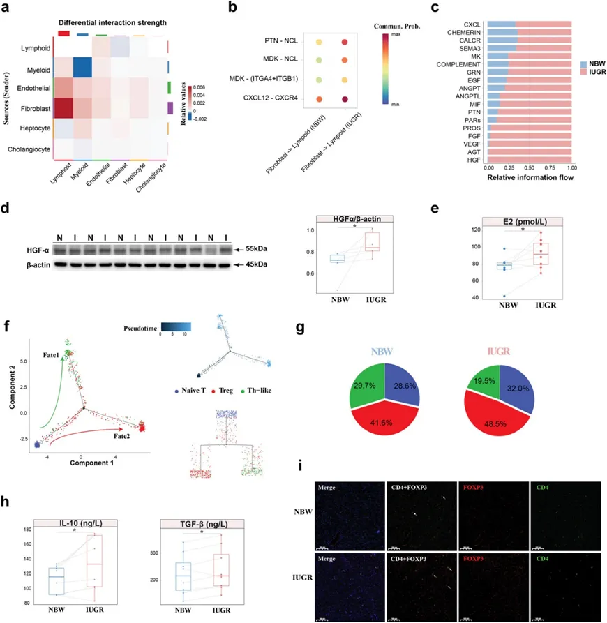
4. 雄性个体招募更多的Kupffer 细胞并诱导炎症Kupffer细胞是肝脏中特殊的巨噬细胞 ，经流式细胞术使用CD45+CD3E+和CD45+CD14+CD163+分别标记T细胞和Kupffer细胞。结果发现雄性个体中T细胞数量减少，而Kupffer细胞增多（Fig.4a）；CellPhoneDB分析显示免疫与非免疫细胞间的交流减弱，且与Kupffer细胞招募和炎症相关的PTPRC和MRC1受体-配体对表达增加，IHC实验验证了这一结果（Fig.4b）。拟时分析显示单核细胞主要分化为Kupffer细胞和DC细胞（Fig.4c）；且主要与TNF-α通过NF-κB信号传导和甘油三酯（TG）代谢相关（Fig.4d-f）。WB实验进一步验证了IUGR雄性个体中炎症相关TLR4和磷酸化NF-κB p65蛋白表达水平高于NBW组（Fig.4g）。以上结果表明了IUGR雄性个体招募Kupffer细胞并诱导炎症。
Fig.4****
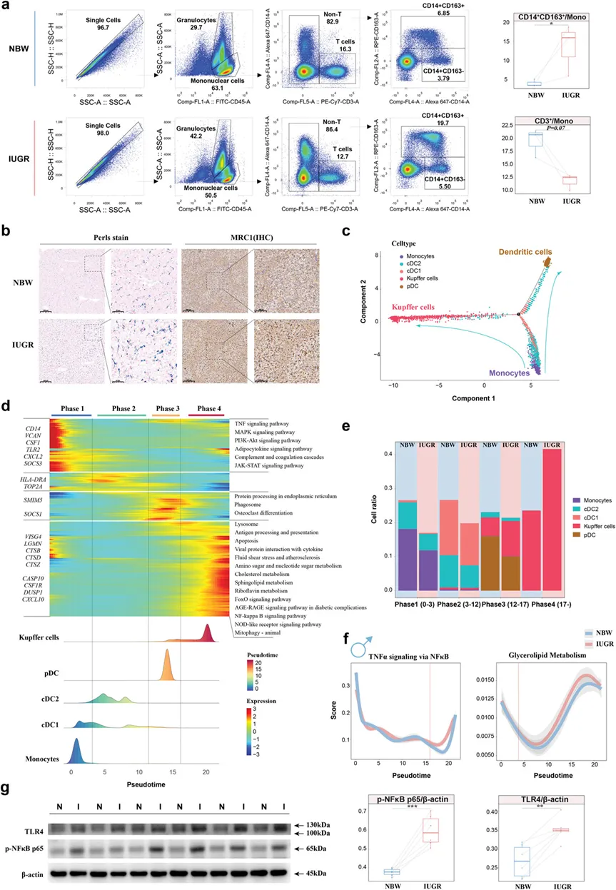
5. IUGR雄性个体中炎症反应破坏肝脏非免疫细胞间通讯
作者在研究IUGR雄性个体中的细胞通讯时，发现炎症能够破坏细胞间通讯 ，cellchat分析发现炎症细胞的信号显著增强，但其与上皮细胞、内皮细胞和间充质细胞的通讯下调（Fig.5a-b）,且大多数细胞类型均受到IL-6的影响（Fig.5c）。ELISA证实IUGR导致IL-6和TNF-α水平升高（Fig.5d）。同时作者发现IUGR导致雄性个体的肝脏再生依赖的WNT2和HGF表达显著减少 （Fig.5e），并用WB和IF实验进行了验证（Fig.5f），以上结果表明炎症的升高破坏了肝脏非免疫细胞间的通讯交流。
Fig.5****
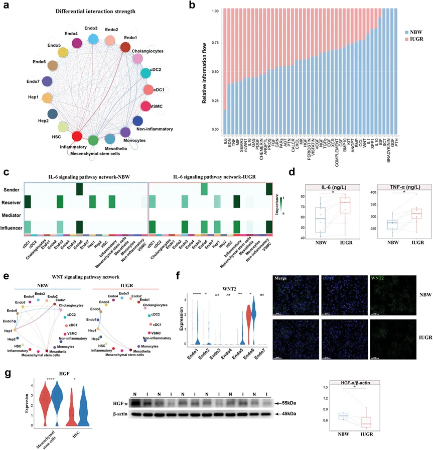
6.肝功能障碍引起的TG沉积也导致了炎症反应的加剧
前面测序数据分析已经发现IUGR雄性个体中存在TG代谢异常 ，进一步对其数值进行检测，发现其在IUGR雄性个体中明显增加（Fig.6a），肝脏组织学分析和脂质代谢组学分析发现IUGR雄性个体中存在明显的脂质代谢紊乱,具体表现为脂质含量增加（Fig.6b-c）,游离脂肪酸含量增加（Fig.6d），且脂质含量异常的种类主要是TG和肉碱类（Fig.6d-f），这些结果很有可能与胰岛素抵抗及脂质代谢等信号通路的异常有关。其中极低密度脂蛋白的明显降低，影响了TG的运输和清除（Fig.6g）,除此之外IUGR雄性小鼠肝脏中载脂蛋白APOA4基因表达显著上调，可能进一步导致了肝损伤和炎症反应（Fig.6h-i）。为了进一步探究缺氧诱导的肝损伤和炎症之间的关系，作者体外将THP-1细胞通过PMA刺激形成巨噬细胞，并选择LPS和IFN-γ处理作为阳性对照，同时设置一组进行缺氧诱导（Fig.7a）；RT-qPCR实验发现阳性对照组中M1巨噬细胞标记物IL-6、TNF-α、PRDM1和IL-10 mRNA水平显著上调(Fig.7b)，同时发现缺氧诱导也能导致M1巨噬细胞相关炎症因子mRNA水平的升高，且磷酸化NF-κB p65蛋白水平明显升高，说明了缺氧引起的肝损伤能够促进巨噬细胞向M1表型分化(Fig.7c)。Fig.6**** 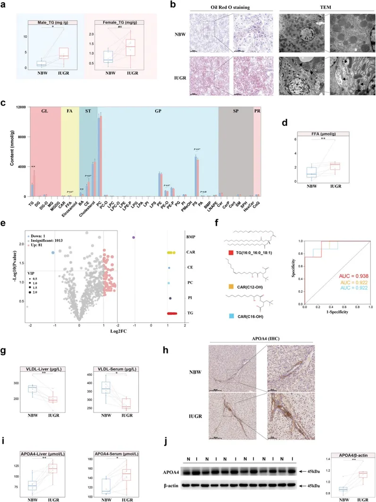
Fig.7****
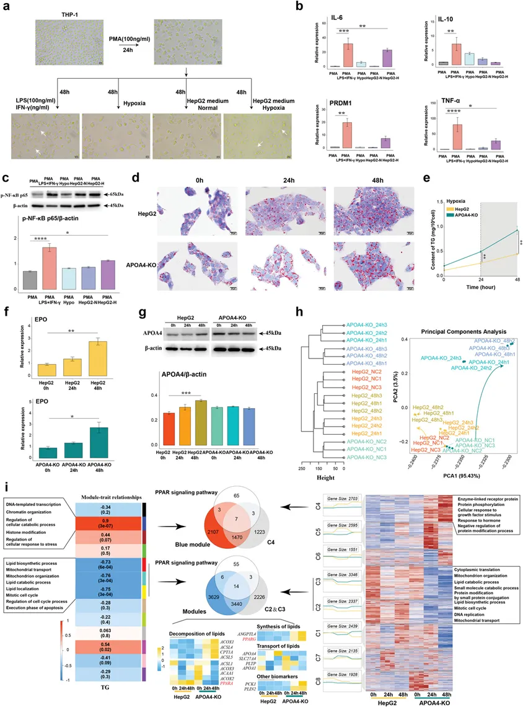
7. APOA4通过介导PPAR信号通路调控TG沉积
前文作者已经发现了APOA4的异常表达，接着作者对其进行进一步探究，研究发现缺氧时间的延长导致细胞内TG含量稳步增加 ，并且APOA4的缺失加速了TG的沉积(Fig.7d-e)。缺氧能够诱导促红细胞生成素（EPO）的增加，因此作者检测了EPO的含量来验证缺氧模型的成功建立(Fig.7f)。同时也发现缺氧也能够导致APOA4的表达有所升高 （Fig.7g）,为了解APOA4在缺氧情况下发挥的作用 ，作者经RNA-seq对缺氧0,24,48h的细胞进行分析，PCA分析显示三组细胞基因表达模式明显不同（Fig.7h），GSEA分析发现APOA4的缺失能够导致PPAR 信号通路的持续中断（Fig.7i）。因此作者选择干预PPARα靶点进行后续实验，ICA作为PPARα的激动剂，能够有效调节 PPAR 信号通路并发挥降脂作用 ，因此口服给予IUGR雄性仔猪ICA（Fig.8a），发现能够肝脏生长被明显改善（Fig.8b）且血清中IGF-1水平的增加（Fig.8c）,同时血清中肝功能的各种参数趋于正常化（Fig.8d），除此之外，给药之后仔猪相对肝脏重量和肝脏TG含量也显着降低（Fig.8e）,IL-6及TNF-α炎症因子表达降低（Fig.8f）。进一步通过WB和IF检测APOA4的表达，发现PPARα的激活能够下调APOA4的表达进而改善TG沉积。
Fig.8
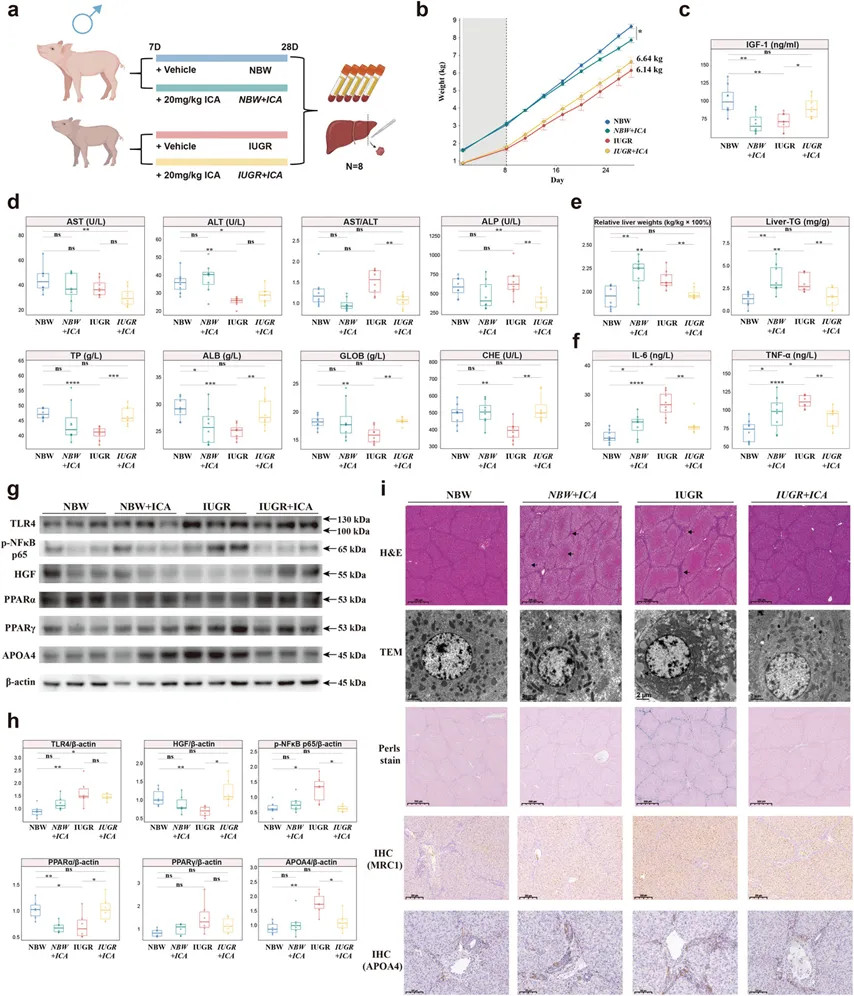
总结讨论
综上所述**，** 作者联合了转录组学，单细胞转录组学和脂质组学，发现了出生后一周IUGR雄性个体更易发生肝损伤，主要是通过招募肝脏巨噬细胞诱导炎症，引起甘油三酯沉积而导致的，通过干预PPARα靶点从而抑制APOA4的表达能够明显的减缓肝损伤；而雌性个体能够诱导Treg细胞的增加而建立免疫耐受，从而防止发生肝损伤。全篇读下来，最大的感受就是生信干湿实验结合的非常紧密，逻辑性很强，机制研究做的非常的清晰，且具有一定的临床意义，其中聚焦的性别差异研究也不失为本。

如何联系我们

 公众号后台消息回复不便，这里给大家留一下领取资料及免费服务器(足够支持你完成硕博生涯的生信环境)的微信号 ，方便各位随时交流、提建议（别问在么，添加时直接说来意）。此外呼声一直很高的交流群 也建好了，欢迎大家入群讨论：
公众号后台消息回复不便，这里给大家留一下领取资料及免费服务器(足够支持你完成硕博生涯的生信环境)的微信号 ，方便各位随时交流、提建议（别问在么，添加时直接说来意）。此外呼声一直很高的交流群 也建好了，欢迎大家入群讨论：
大家可以阅读完这几篇之后添加给生信入门初学者的小贴士 如何搜索公众号过往发布内容

 您点的每个赞和在看，我都认真当成了喜欢
您点的每个赞和在看，我都认真当成了喜欢